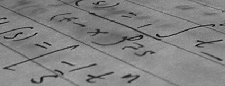

Image binarization by thresholding: Otsu’s method
Laboratory 5, DEDP
1 Objective
Read and display grayscale images in Matlab, relate them to their intensity histograms, and implement image binarization using Otsu’s threshold search and within-cluster variances.
2 Theoretical aspects
2.1 A grayscale image is a matrix
A digital image is a rectangular grid of pixels. A grayscale image stores one intensity value per pixel in a matrix I:
I(r,c)is the pixel in rowr, columnc.- Small intensities represent dark pixels; large intensities represent bright pixels.
- For an 8-bit image stored as
uint8, intensities are integers from 0 (black) to 255 (white). - If the image is stored as
double, intensities are real numbers, either in the interval 0–255 or the interval 0–1.
In this lab, we prefer pixel values to be in the range 0–1, and having the double type, which allows for precise calculations.
For example, this is a small grayscale image, not a colour image:
I_small = [0 0.25 0.5 1; 0 0.25 0.5 1; 0 0.25 0.5 1];
figure
imshow(I_small)In the example below:
imread()reads an image file;im2double()converts an integer image todoubleand rescales its intensities to 0–1.size(I)gives its number of rows and columns (just like any Matlab matrix).imshow()displays it.
Iraw = imread('coins.png');
I = im2double(Iraw);
size(I)
figure
imshow(I)The images used in this lab are already grayscale, so no colour conversion is needed. A colour RGB image would have three channels, and could be converted to grayscale with rgb2gray().
For the 8-bit images in this lab, im2double(Iraw) is equivalent to double(Iraw)/255. The value 0 represents black and 1 represents white. This conversion uses the full 8-bit scale, not the smallest and largest values actually present in the image, so those observed values need not become 0 and 1.
Conversion is not just a change of type: double(Iraw) alone leaves 8-bit intensities on the 0–255 scale. Also, im2double() does not rescale an input that is already double; convert the original integer image directly.
From now on, use the normalized image I for display and calculations. imshow(I) uses the range 0–1 for a double image; no additional display-range argument is needed. See the im2double documentation.
2.2 From pixels to a histogram
The image histogram counts how many pixels have each intensity, and shows the distribution of intensities.
Use imhist() directly on the image to display its intensity histogram:
figure
imhist(I)
xlabel('Intensity')
ylabel('Number of pixels')For a grayscale image, imhist(I) uses 256 bins by default. For our normalized double image, the bin locations span 0–1. Use imhist(I,256) to specify that bin count explicitly when comparing images. Unlike a PDF-normalized histogram, this plot shows pixel counts. See the imhist documentation.
For the threshold calculations, I(:) collects every pixel into a single column vector, without changing its type or intensity scale:
pixels = I(:);Two concentrations of intensities may suggest two groups, such as dark and bright regions. The histogram counts intensities but does not describe where those pixels are located in the image.

Photograph: Lav Varshney (CC0), via scikit-image’s camera dataset. Comparison figure: scikit-image thresholding example. This external illustration uses 8-bit intensities on the 0–255 scale; divide those intensities and the threshold by 255 to express them on our 0–1 scale. The binary image separates dark from bright pixels, not necessarily the whole person from the background.
2.3 Side note: histogram equalization
An image whose intensities occupy a narrow part of 0–1 may have low contrast. Histogram equalization remaps intensities using the cumulative histogram (the fraction of pixels at or below each intensity, as in the CDF from Lab 2). It spreads frequently occurring intensities over a wider range, without changing pixel positions. It is contrast enhancement, not binarization or noise removal, and is not a required preprocessing step for Otsu’s method.
Ieq = histeq(I,256);The result has the same size and type as I, with intensities still in 0–1. Compare imshow(I) with imshow(Ieq) and imhist(I,256) with imhist(Ieq,256). The histogram need not become exactly flat: pixels with the same input intensity remain mapped together. See the histeq documentation.

To compare plots in one figure, subplot(2,2,1) selects the first position in a 2-by-2 grid. Then call imshow() or imhist() to draw there. Positions are numbered across the first row, then across the second row. Use the same 0–1 image display range and the same histogram bin count before and after.
2.4 Thresholding and image binarization
Image binarization converts a grayscale image into an image with only two values (black and white). Thresholding is one way to perform binarization: assign one binary value to intensities on one side of a threshold, and the other value to intensities on the other side.
A threshold t divides the intensities into two clusters, those below t and those above t:
C_0(t)=\{x:x\le t\}, \qquad C_1(t)=\{x:x>t\}.
Here, each x is a pixel intensity. The comparison produces a binary image:
BW = I > 0.5;
figure
imshow(BW)BW has the same rows and columns as I. Its values are false (displayed as black) and true (displayed as white). In this convention, white pixels are those above the threshold. This does not automatically mean that white pixels are the objects of interest.
Typical binarization examples include:
- Dark printed text on white paper: separate ink from the paper.
- Handwritten notes on paper: distinguish the dark ink from the paper, even when a photograph introduces shadows and varying illumination.
- Bright coins on a darker background: separate the coins from their surroundings.

Source: scikit-image’s text image, originally from Wikipedia; released into the public domain. The unmodified grayscale image is supplied locally as img/Lab5_handwrittenText.png.
For dark text or other dark objects, I > t keeps the background white and the objects black. If the desired mask should instead mark the objects as true, use I <= t. Choosing the threshold and choosing which cluster represents the foreground are separate decisions.
The question is how to choose a threshold that separates foreground and background well. Otsu’s method is one way to do this.
2.5 Otsu’s criterion: compact intensity clusters
We want pixels within each cluster to have similar intensities. Otsu’s method chooses a threshold that minimizes the weighted within-cluster variance.
Let N be the total number of pixels, and let N_0(t) and N_1(t) be the numbers of pixels in the two clusters. Their weights are
w_0(t)=\frac{N_0(t)}{N}, \qquad w_1(t)=\frac{N_1(t)}{N}.
For a nonempty cluster C_j(t), compute its mean and variance as
m_j(t)=\frac{1}{N_j(t)}\sum_{x\in C_j(t)}x,
v_j(t)=\frac{1}{N_j(t)}\sum_{x\in C_j(t)}(x-m_j(t))^2.
In Matlab, after extracting the intensities of one nonempty cluster into a vector cluster, use mean() and var() to compute m_j(t) and v_j(t):
mj = mean(cluster);
vj = var(cluster,1);These are statistics of the pixel intensities, not of the pixel coordinates or of the binary mask. Repeat the calculations for each of the two clusters.
The score to minimize is
J(t)=w_0(t)v_0(t)+w_1(t)v_1(t).
The weights matter: a cluster containing few pixels should not contribute as much as one containing most pixels. Do not minimize the unweighted sum of the two variances.
Variance normalization: here we describe all the observed pixels in each cluster, so use var(cluster,1), with denominator equal to the cluster size, not Matlab’s default sample normalization. A one-pixel cluster has variance 0.
Searching all thresholds
For an image obtained by normalizing 8-bit intensities, use 256 candidate thresholds on the same scale:
thresholds = (0:255)/255;These run from 0 to 1 in steps of 1/255. At each threshold:
- Extract the two pixel vectors using logical indexing.
- If either vector is empty, do not evaluate that threshold.
- Otherwise, compute both variances, both weights, and the score J(t).
- Store the score so that it can be plotted and its minimum located.
isempty(x) tests whether a vector has no elements. Inside a for loop, continue skips the rest of the current iteration. Use these to avoid calculating a variance for an empty cluster.
One way to store the scores is to initialize a vector with infinity:
scores = Inf(1,256);Leave invalid thresholds at Inf, so they cannot be selected as minima. For a nonconstant image, at least one threshold has two nonempty clusters. A constant image has no valid split. If all scores remain Inf, report that no valid threshold exists rather than interpreting the index from min().
Indexing: a threshold is now an intensity in 0–1, not a vector index. Loop over integer indices k=1:numel(thresholds), set t=thresholds(k), and store the score at position k. The second output of min() gives an index:
[value, index] = min(v);Use that index to look up the corresponding intensity in thresholds. Do not use a fractional threshold as a Matlab array index.
Several thresholds can produce the same split and score when there are gaps in the histogram. Use the first minimizing threshold returned by min(). This is a convention for ties, not a unique physical boundary.
In this lab, implement the search yourself. Do not replace it with graythresh, otsuthresh, or another automatic threshold-selection function.
2.6 Summary: functions and notation you should know
| Signature or notation | Example | Description |
|---|---|---|
imread(filename) |
Iraw = imread('coins.png') |
Read an image from a file |
size(I) |
size(I) |
Image dimensions (matrix dimensions) |
im2double(Iraw) |
I = im2double(Iraw) |
Convert an integer image to normalized double intensities in 0–1 |
imshow(I) |
imshow(I) |
Display a normalized double or logical image |
I(r,c), I(:) |
I(10,20), I(:) |
Access one pixel; collect all pixels into a column vector |
imhist(I), imhist(I,n) |
imhist(I,256) |
Display the image histogram; normalized intensities span 0–1 |
I > t |
BW = I > 0.5 |
Logical mask selecting pixels above a threshold |
| Logical indexing | pixels(pixels <= t) |
Extract intensities satisfying a condition |
numel(x) |
numel(pixels) |
Number of elements |
mean(x) |
mean(cluster) |
Mean intensity m_j(t) of a cluster |
var(x,1) |
var(cluster,1) |
Variance normalized by the number of cluster elements |
isempty(x), continue |
isempty(cluster) |
Detect an empty cluster; skip a loop iteration |
Inf(m,n) |
Inf(1,256) |
Initialize a matrix or vector with infinity |
min(x) |
[value,index] = min(scores) |
Minimum value and index of its first occurrence |
plot(x,y) |
plot(thresholds,scores) |
Plot score against candidate threshold |
histeq(I,n) |
histeq(I,256) |
Histogram equalization with n target bins |
subplot(m,n,k) |
subplot(2,2,3) |
Select a plotting position in a grid |
3 Exercises
Write your commands in a script or live script. Label figures and answer interpretation questions in comments. Use Matlab with Image Processing Toolbox for imhist() and histeq(). The grayscale sample images coins.png and pout.tif are supplied with that toolbox. Two additional grayscale teaching images are supplied in this lab’s img/ directory: the simulated Lab5_document.png and the real photograph Lab5_handwrittenText.png. Run your script from Labs/ so these relative paths work. The image-import tutorial uses pout.tif, and the Otsu documentation example uses coins.png; the latter is a reference, not a substitute for your loop.
Suggested allocation: 15 minutes for Exercise 1, 10 for Exercise 2, 65 for Exercise 3, 10 for the short side experiment in Exercise 4, and 20 for the final questions and checking.
Your first grayscale image:
- Read
coins.pngintoIraw. Convert it withim2double()and store the normalized image inI. DisplayIin a figure. - Find its size. How many pixels does it contain? Compare the smallest and largest observed intensities in
IrawandI. Are the values inIexactly those inIrawdivided by 255? - Read the pixel at row 50, column 100. Does a large row index move down or across the displayed image?
- Plot the intensity histogram directly with
imhist(I). Which ranges of normalized intensity are most common? - Collect the pixels into a column vector
pixelsusingI(:). Use this vector for calculations, keepingIas a matrix for display.
- Read
Choosing a threshold by eye:
- Predict how the white regions will change when the threshold increases.
- Create and display binary images for thresholds 0.3, 0.5, and 0.7. Use a 1-by-3 subplot layout, with the threshold in each title.
- Select one of these thresholds and explain your choice by inspecting both the image and its histogram. Are all coins separated cleanly from the background?
Implement Otsu’s method as a function:
Create a new file
otsuManual.m, in the same folder as your script, with this function header:function [bestThreshold, minScore, scores, thresholds] = otsuManual(I)The input
Iis a grayscaledoubleimage in 0–1. Return the selected threshold, its score, the vector of scores, and the candidate thresholds. Finish the function withend.Inside the function, collect the pixels into a vector, set
thresholds = (0:255)/255, and initialize the scores toInf. Write aforloop that splits the pixels into two clusters at each threshold. Skip empty clusters; otherwise, compute both variances withvar(cluster,1)and their weighted score J(t). After the loop, use the first minimum to select the best threshold. Do not use an automatic Otsu function.Call your function from the script for the coins image:
[bestThreshold, minScore, scores, thresholds] = otsuManual(I);Plot the scores against the thresholds and report
bestThreshold. BinarizeIusing that threshold. Display the result beside the original and compare it with your manual choice from Exercise 2.Optional: call the same function for
img/Lab5_handwrittenText.pngorimg/Lab5_document.png, after reading and normalizing the image. Show the image, its histogram, and its binarization. For dark ink, compare the masksI > bestThresholdandI <= bestThreshold.Optional: test the function on
[0.2 0.2 0.2 0.2; 0.8 0.8 0.8 0.8]. Can several thresholds give the same minimum score and binary image?
Short side experiment: histogram equalization (about 10 minutes):
- Read
pout.tif, convert it withim2double(), and store it inP. Leave the image used for your Otsu implementation unchanged. - Compute
Peq = histeq(P,256). In a 2-by-2 figure, showPandPeqabove their histograms, usingimhist(...,256)for both. Keep both image displays on the default 0–1 scale. - Briefly describe the change in visible contrast and the histograms. Is the equalized histogram exactly flat?
- Read
4 Final questions
- Randomly rearrange all pixels without changing their intensity values. Does Otsu’s score curve change? Can the image still look completely different?
- Suppose you minimize v_0(t)+v_1(t) instead of the weighted score. Why might the chosen threshold change when one cluster contains very few pixels?
- Can a single intensity threshold separate a dark object from an equally dark background? What information is missing from this decision rule?
- Can histogram equalization recover details that were lost because several different scene intensities were recorded as the same pixel value?